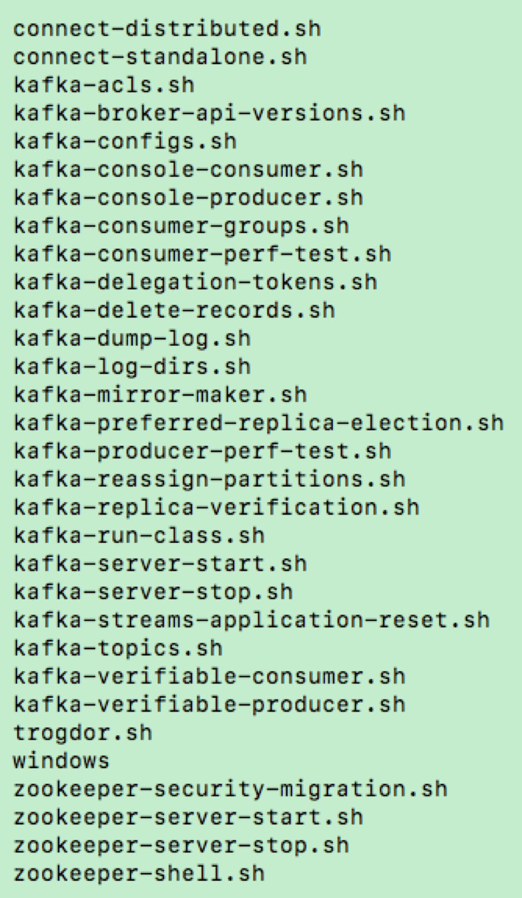
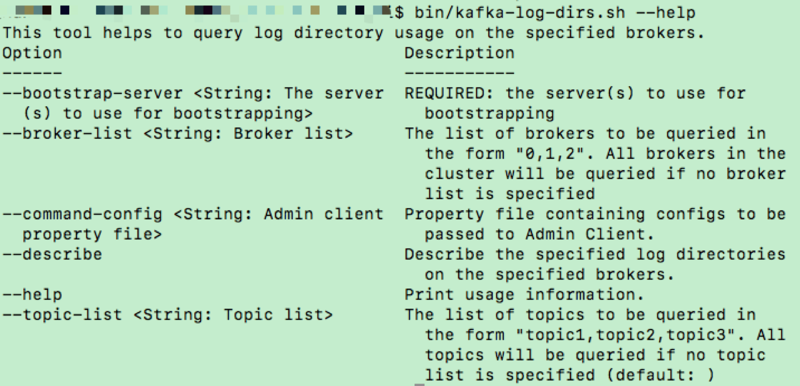
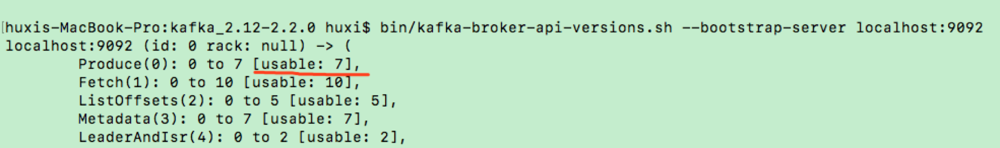
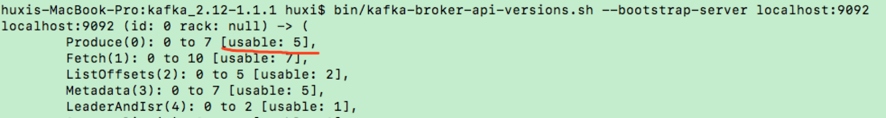
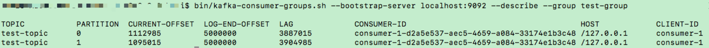
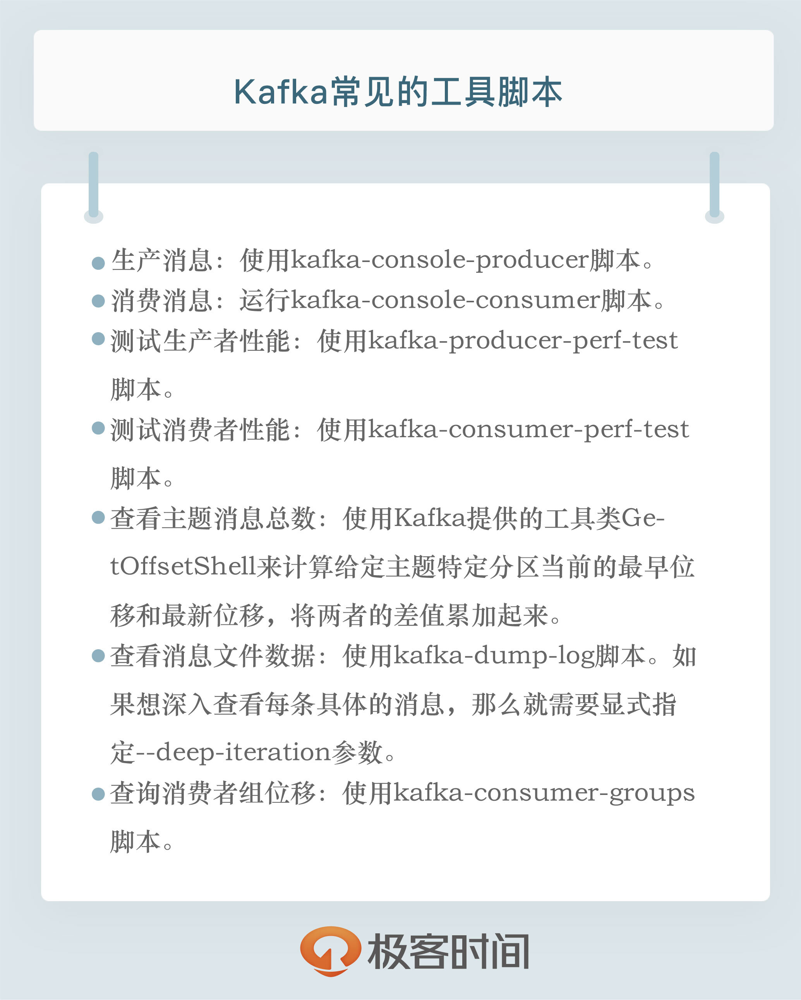

- 00 开篇词 为什么要学习Kafka？.md.html
- 01 消息引擎系统ABC.md.html
- 02 一篇文章带你快速搞定Kafka术语.md.html
- 03 Kafka只是消息引擎系统吗？.md.html
- 04 我应该选择哪种Kafka？.md.html
- 05 聊聊Kafka的版本号.md.html
- 06 Kafka线上集群部署方案怎么做？.md.html
- 07 最最最重要的集群参数配置（上）.md.html
- 08 最最最重要的集群参数配置（下）.md.html
- 09 生产者消息分区机制原理剖析.md.html
- 10 生产者压缩算法面面观.md.html
- 11 无消息丢失配置怎么实现？.md.html
- 12 客户端都有哪些不常见但是很高级的功能？.md.html
- 13 Java生产者是如何管理TCP连接的？.md.html
- 14 幂等生产者和事务生产者是一回事吗？.md.html
- 15 消费者组到底是什么？.md.html
- 16 揭开神秘的“位移主题”面纱.md.html
- 17 消费者组重平衡能避免吗？.md.html
- 18 Kafka中位移提交那些事儿.md.html
- 19 CommitFailedException异常怎么处理？.md.html
- 20 多线程开发消费者实例.md.html
- 21 Java 消费者是如何管理TCP连接的_.md.html
- 22 消费者组消费进度监控都怎么实现？.md.html
- 23 Kafka副本机制详解.md.html
- 24 请求是怎么被处理的？.md.html
- 25 消费者组重平衡全流程解析.md.html
- 26 你一定不能错过的Kafka控制器.md.html
- 27 关于高水位和Leader Epoch的讨论.md.html
- 28 主题管理知多少_.md.html
- 29 Kafka动态配置了解下？.md.html
- 30 怎么重设消费者组位移？.md.html
- 31 常见工具脚本大汇总.md.html
- 32 KafkaAdminClient：Kafka的运维利器.md.html
- 33 Kafka认证机制用哪家？.md.html
- 34 云环境下的授权该怎么做？.md.html
- 35 跨集群备份解决方案MirrorMaker.md.html
- 36 你应该怎么监控Kafka？.md.html
- 37 主流的Kafka监控框架.md.html
- 38 调优Kafka，你做到了吗？.md.html
- 39 从0搭建基于Kafka的企业级实时日志流处理平台.md.html
- 40 Kafka Streams与其他流处理平台的差异在哪里？.md.html
- 41 Kafka Streams DSL开发实例.md.html
- 42 Kafka Streams在金融领域的应用.md.html
- 加餐 搭建开发环境、阅读源码方法、经典学习资料大揭秘.md.html
- 用户故事 黄云：行百里者半九十.md.html
- 结束语 以梦为马，莫负韶华！.md.html
- 捐赠
31 常见工具脚本大汇总
你好，我是胡夕。今天我要跟你分享的主题是：Kafka常见的脚本汇总。
命令行脚本概览
Kafka默认提供了很多个命令行脚本，用于实现各种各样的功能和运维管理。今天我以2.2版本为例，详细地盘点下这些命令行工具。下图展示了2.2版本提供的所有命令行脚本。

从图中我们可以知道，2.2版本总共提供了30个SHELL脚本。图中的windows实际上是个子目录，里面保存了Windows平台下的BAT批处理文件。其他的.sh文件则是Linux平台下的标准SHELL脚本。
默认情况下，不加任何参数或携带 –help运行SHELL文件，会得到该脚本的使用方法说明。下面这张图片展示了kafka-log-dirs脚本的调用方法。

有了这些基础的了解，我来逐一地说明这些脚本的用途，然后再给你详细地介绍一些常见的脚本。
我们先来说说connect-standalone和connect-distributed两个脚本。这两个脚本是Kafka Connect组件的启动脚本。在专栏第4讲谈到Kafka生态时，我曾说过社区提供了Kafka Connect组件，用于实现Kafka与外部世界系统之间的数据传输。Kafka Connect支持单节点的Standalone模式，也支持多节点的Distributed模式。这两个脚本分别是这两种模式下的启动脚本。鉴于Kafka Connect不在我们的讨论范围之内，我就不展开讲了。
接下来是kafka-acls脚本。它是用于设置Kafka权限的，比如设置哪些用户可以访问Kafka的哪些主题之类的权限。在专栏后面，我会专门来讲Kafka安全设置的内容，到时候我们再细聊这个脚本。
下面是kafka-broker-api-versions脚本。这个脚本的主要目的是验证不同Kafka版本之间服务器和客户端的适配性。我来举个例子，下面这两张图分别展示了2.2版本Server端与2.2版本Client端和1.1.1版本Client端的适配性。


我截取了部分输出内容，现在我稍微解释一下这些输出的含义。我们以第一行为例：
Produce(0): 0 to 7 [usable: 7]
“Produce”表示Produce请求，生产者生产消息本质上就是向Broker端发送Produce请求。该请求是Kafka所有请求类型中的第一号请求，因此序号是0。后面的“0 to 7”表示Produce请求在Kafka 2.2中总共有8个版本，序号分别是0到7。“usable：7”表示当前连入这个Broker的客户端API能够使用的版本号是7，即最新的版本。
请注意这两张图中红线部分的差异。在第一张图中，我们使用2.2版本的脚本连接2.2版本的Broker，usable自然是7，表示能使用最新版本。在第二张图中，我们使用1.1版本的脚本连接2.2版本的Broker，usable是5，这表示1.1版本的客户端API只能发送版本号是5的Produce请求。
如果你想了解你的客户端版本与服务器端版本的兼容性，那么最好使用这个命令来检验一下。值得注意的是，在0.10.2.0之前，Kafka是单向兼容的，即高版本的Broker能够处理低版本Client发送的请求，反过来则不行。自0.10.2.0版本开始，Kafka正式支持双向兼容，也就是说，低版本的Broker也能处理高版本Client的请求了。
接下来是kafka-configs脚本。对于这个脚本，我想你应该已经很熟悉了，我们在讨论参数配置和动态Broker参数时都提到过它的用法，这里我就不再赘述了。
下面的两个脚本是重量级的工具行脚本：kafka-console-consumer和kafka-console-producer。在某种程度上，说它们是最常用的脚本也不为过。这里我们暂时先跳过，后面我会重点介绍它们。
关于producer和consumer，成组出现的还有另外一组脚本：kafka-producer-perf-test和kafka-consumer-perf-test。它们分别是生产者和消费者的性能测试工具，非常实用，稍后我会重点介绍。
接下来的kafka-consumer-groups命令，我在介绍重设消费者组位移时稍有涉及，后面我们来聊聊该脚本的其他用法。
kafka-delegation-tokens脚本可能不太为人所知，它是管理Delegation Token的。基于Delegation Token的认证是一种轻量级的认证机制，补充了现有的SASL认证机制。
kafka-delete-records脚本用于删除Kafka的分区消息。鉴于Kafka本身有自己的自动消息删除策略，这个脚本的实际出场率并不高。
kafka-dump-log脚本可谓是非常实用的脚本。它能查看Kafka消息文件的内容，包括消息的各种元数据信息，甚至是消息体本身。
kafka-log-dirs脚本是比较新的脚本，可以帮助查询各个Broker上的各个日志路径的磁盘占用情况。
kafka-mirror-maker脚本是帮助你实现Kafka集群间的消息同步的。在专栏后面，我会单独用一讲的内容来讨论它的用法。
kafka-preferred-replica-election脚本是执行Preferred Leader选举的。它可以为指定的主题执行“换Leader”的操作。
kafka-reassign-partitions脚本用于执行分区副本迁移以及副本文件路径迁移。
kafka-topics脚本你应该很熟悉了，所有的主题管理操作，都是由该脚本来实现的。
kafka-run-class脚本则颇为神秘，你可以用这个脚本执行任何带main方法的Kafka类。在Kafka早期的发展阶段，很多工具类都没有自己专属的SHELL脚本，比如刚才提到的kafka-dump-log，你只能通过运行kafka-run-class kafka.tools.DumpLogSegments的方式来间接实现。如果你用文本编辑器打开kafka-dump-log.sh，你会发现它实际上调用的就是这条命令。后来社区逐渐为这些重要的工具类都添加了专属的命令行脚本，现在kafka-run-class脚本的出场率大大降低了。在实际工作中，你几乎遇不上要直接使用这个脚本的场景了。
对于kafka-server-start和kafka-server-stop脚本，你应该不会感到陌生，它们是用于启动和停止Kafka Broker进程的。
kafka-streams-application-reset脚本用来给Kafka Streams应用程序重设位移，以便重新消费数据。如果你没有用到Kafka Streams组件，这个脚本对你来说是没有用的。
kafka-verifiable-producer和kafka-verifiable-consumer脚本是用来测试生产者和消费者功能的。它们是很“古老”的脚本了，你几乎用不到它们。另外，前面提到的Console Producer和Console Consumer完全可以替代它们。
剩下的zookeeper开头的脚本是用来管理和运维ZooKeeper的，这里我就不做过多介绍了。
最后说一下trogdor脚本。这是个很神秘的家伙，官网上也不曾出现它的名字。据社区内部资料显示，它是Kafka的测试框架，用于执行各种基准测试和负载测试。一般的Kafka用户应该用不到这个脚本。
好了，Kafka自带的所有脚本我全部梳理了一遍。虽然这些描述看起来有点流水账，但是，有了这些基础的认知，我们才能更好地利用这些脚本。下面我就来详细介绍一下重点的脚本操作。
重点脚本操作
生产消息
生产消息使用kafka-console-producer脚本即可，一个典型的命令如下所示：
$ bin/kafka-console-producer.sh --broker-list kafka-host:port --topic test-topic --request-required-acks -1 --producer-property compression.type=lz4
>
在这段命令中，我们指定生产者参数acks为-1，同时启用了LZ4的压缩算法。这个脚本可以很方便地让我们使用控制台来向Kafka的指定主题发送消息。
消费消息
下面再来说说数据消费。如果要快速地消费主题中的数据来验证消息是否存在，运行kafka-console-consumer脚本应该算是最便捷的方法了。常用的命令用法如下：
$ bin/kafka-console-consumer.sh --bootstrap-server kafka-host:port --topic test-topic --group test-group --from-beginning --consumer-property enable.auto.commit=false
注意，在这段命令中，我们指定了group信息。如果没有指定的话，每次运行Console Consumer，它都会自动生成一个新的消费者组来消费。久而久之，你会发现你的集群中有大量的以console-consumer开头的消费者组。通常情况下，你最好还是加上group。
另外，from-beginning等同于将Consumer端参数auto.offset.reset设置成earliest，表明我想从头开始消费主题。如果不指定的话，它会默认从最新位移读取消息。如果此时没有任何新消息，那么该命令的输出为空，你什么都看不到。
最后，我在命令中禁掉了自动提交位移。通常情况下，让Console Consumer提交位移是没有意义的，毕竟我们只是用它做一些简单的测试。
测试生产者性能
如果你想要对Kafka做一些简单的性能测试。那么不妨试试下面这一组工具。它们分别用于测试生产者和消费者的性能。
我们先说测试生产者的脚本：kafka-producer-perf-test。它的参数有不少，但典型的命令调用方式是这样的。
$ bin/kafka-producer-perf-test.sh --topic test-topic --num-records 10000000 --throughput -1 --record-size 1024 --producer-props bootstrap.servers=kafka-host:port acks=-1 linger.ms=2000 compression.type=lz4
2175479 records sent, 435095.8 records/sec (424.90 MB/sec), 131.1 ms avg latency, 681.0 ms max latency.
4190124 records sent, 838024.8 records/sec (818.38 MB/sec), 4.4 ms avg latency, 73.0 ms max latency.
10000000 records sent, 737463.126844 records/sec (720.18 MB/sec), 31.81 ms avg latency, 681.00 ms max latency, 4 ms 50th, 126 ms 95th, 604 ms 99th, 672 ms 99.9th.
上述命令向指定主题发送了1千万条消息，每条消息大小是1KB。该命令允许你在producer-props后面指定要设置的生产者参数，比如本例中的压缩算法、延时时间等。
该命令的输出值得好好说一下。它会打印出测试生产者的吞吐量(MB/s)、消息发送延时以及各种分位数下的延时。一般情况下，消息延时不是一个简单的数字，而是一组分布。或者说，我们应该关心延时的概率分布情况，仅仅知道一个平均值是没有意义的。这就是这里计算分位数的原因。通常我们关注到99th分位就可以了。比如在上面的输出中，99th值是604ms，这表明测试生产者生产的消息中，有99%消息的延时都在604ms以内。你完全可以把这个数据当作这个生产者对外承诺的SLA。
测试消费者性能
测试消费者也是类似的原理，只不过我们使用的是kafka-consumer-perf-test脚本，命令如下：
$ bin/kafka-consumer-perf-test.sh --broker-list kafka-host:port --messages 10000000 --topic test-topic
start.time, end.time, data.consumed.in.MB, MB.sec, data.consumed.in.nMsg, nMsg.sec, rebalance.time.ms, fetch.time.ms, fetch.MB.sec, fetch.nMsg.sec
2019-06-26 15:24:18:138, 2019-06-26 15:24:23:805, 9765.6202, 1723.2434, 10000000, 1764602.0822, 16, 5651, 1728.1225, 1769598.3012
虽然输出格式有所差别，但该脚本也会打印出消费者的吞吐量数据。比如本例中的1723MB/s。有点令人遗憾的是，它没有计算不同分位数下的分布情况。因此，在实际使用过程中，这个脚本的使用率要比生产者性能测试脚本的使用率低。
查看主题消息总数
很多时候，我们都想查看某个主题当前的消息总数。令人惊讶的是，Kafka自带的命令竟然没有提供这样的功能，我们只能“绕道”获取了。所谓的绕道，是指我们必须要调用一个未被记录在官网上的命令。命令如下：
$ bin/kafka-run-class.sh kafka.tools.GetOffsetShell --broker-list kafka-host:port --time -2 --topic test-topic
test-topic:0:0
test-topic:1:0
$ bin/kafka-run-class.sh kafka.tools.GetOffsetShell --broker-list kafka-host:port --time -1 --topic test-topic
test-topic:0:5500000
test-topic:1:5500000
我们要使用Kafka提供的工具类GetOffsetShell来计算给定主题特定分区当前的最早位移和最新位移，将两者的差值累加起来，就能得到该主题当前总的消息数。对于本例来说，test-topic总的消息数为5500000 + 5500000，等于1100万条。
查看消息文件数据
作为Kafka使用者，你是不是对Kafka底层文件里面保存的内容很感兴趣? 如果是的话，你可以使用kafka-dump-log脚本来查看具体的内容。
$ bin/kafka-dump-log.sh --files ../data_dir/kafka_1/test-topic-1/00000000000000000000.log
Dumping ../data_dir/kafka_1/test-topic-1/00000000000000000000.log
Starting offset: 0
baseOffset: 0 lastOffset: 14 count: 15 baseSequence: -1 lastSequence: -1 producerId: -1 producerEpoch: -1 partitionLeaderEpoch: 0 isTransactional: false isControl: false position: 0 CreateTime: 1561597044933 size: 1237 magic: 2 compresscodec: LZ4 crc: 646766737 isvalid: true
baseOffset: 15 lastOffset: 29 count: 15 baseSequence: -1 lastSequence: -1 producerId: -1 producerEpoch: -1 partitionLeaderEpoch: 0 isTransactional: false isControl: false position: 1237 CreateTime: 1561597044934 size: 1237 magic: 2 compresscodec: LZ4 crc: 3751986433 isvalid: true
......
如果只是指定 –files，那么该命令显示的是消息批次（RecordBatch）或消息集合（MessageSet）的元数据信息，比如创建时间、使用的压缩算法、CRC校验值等。
如果我们想深入看一下每条具体的消息，那么就需要显式指定 –deep-iteration参数，如下所示：
$ bin/kafka-dump-log.sh --files ../data_dir/kafka_1/test-topic-1/00000000000000000000.log --deep-iteration
Dumping ../data_dir/kafka_1/test-topic-1/00000000000000000000.log
Starting offset: 0
baseOffset: 0 lastOffset: 14 count: 15 baseSequence: -1 lastSequence: -1 producerId: -1 producerEpoch: -1 partitionLeaderEpoch: 0 isTransactional: false isControl: false position: 0 CreateTime: 1561597044933 size: 1237 magic: 2 compresscodec: LZ4 crc: 646766737 isvalid: true
| offset: 0 CreateTime: 1561597044911 keysize: -1 valuesize: 1024 sequence: -1 headerKeys: []
| offset: 1 CreateTime: 1561597044932 keysize: -1 valuesize: 1024 sequence: -1 headerKeys: []
| offset: 2 CreateTime: 1561597044932 keysize: -1 valuesize: 1024 sequence: -1 headerKeys: []
| offset: 3 CreateTime: 1561597044932 keysize: -1 valuesize: 1024 sequence: -1 headerKeys: []
| offset: 4 CreateTime: 1561597044932 keysize: -1 valuesize: 1024 sequence: -1 headerKeys: []
| offset: 5 CreateTime: 1561597044932 keysize: -1 valuesize: 1024 sequence: -1 headerKeys: []
| offset: 6 CreateTime: 1561597044932 keysize: -1 valuesize: 1024 sequence: -1 headerKeys: []
| offset: 7 CreateTime: 1561597044932 keysize: -1 valuesize: 1024 sequence: -1 headerKeys: []
| offset: 8 CreateTime: 1561597044932 keysize: -1 valuesize: 1024 sequence: -1 headerKeys: []
| offset: 9 CreateTime: 1561597044932 keysize: -1 valuesize: 1024 sequence: -1 headerKeys: []
| offset: 10 CreateTime: 1561597044932 keysize: -1 valuesize: 1024 sequence: -1 headerKeys: []
| offset: 11 CreateTime: 1561597044932 keysize: -1 valuesize: 1024 sequence: -1 headerKeys: []
| offset: 12 CreateTime: 1561597044932 keysize: -1 valuesize: 1024 sequence: -1 headerKeys: []
| offset: 13 CreateTime: 1561597044933 keysize: -1 valuesize: 1024 sequence: -1 headerKeys: []
| offset: 14 CreateTime: 1561597044933 keysize: -1 valuesize: 1024 sequence: -1 headerKeys: []
baseOffset: 15 lastOffset: 29 count: 15 baseSequence: -1 lastSequence: -1 producerId: -1 producerEpoch: -1 partitionLeaderEpoch: 0 isTransactional: false isControl: false position: 1237 CreateTime: 1561597044934 size: 1237 magic: 2 compresscodec: LZ4 crc: 3751986433 isvalid: true
......
在上面的输出中，以竖线开头的就是消息批次下的消息信息。如果你还想看消息里面的实际数据，那么还需要指定 --print-data-log参数，如下所示：
$ bin/kafka-dump-log.sh --files ../data_dir/kafka_1/test-topic-1/00000000000000000000.log --deep-iteration --print-data-log
查询消费者组位移
接下来，我们来看如何使用kafka-consumer-groups脚本查看消费者组位移。在上一讲讨论重设消费者组位移的时候，我们使用的也是这个命令。当时我们用的是 --reset-offsets参数，今天我们使用的是 --describe参数。假设我们要查询Group ID是test-group的消费者的位移，那么命令如图所示：

图中的CURRENT-OFFSET表示该消费者当前消费的最新位移，LOG-END-OFFSET表示对应分区最新生产消息的位移，LAG列是两者的差值。CONSUMER-ID是Kafka消费者程序自动生成的一个ID。截止到2.2版本，你都无法干预这个ID的生成过程。如果运行该命令时，这个消费者程序已经终止了，那么此列的值为空。
小结
好了，我们小结一下。今天我们一起梳理了Kafka 2.2版本自带的所有脚本，我给出了常见的运维操作的工具行命令。希望这些命令对你操作和管理Kafka集群有所帮助。另外，我想强调的是，由于Kafka依然在不断演进，我们今天提到的命令的用法很可能会随着版本的变迁而发生变化。在具体使用这些命令时，你最好详细地阅读一下它们的Usage说明。

开放讨论
你在使用Kafka命令的过程中，曾经踩过哪些“坑”，或者说有哪些惨痛的经历呢？
欢迎写下你的思考和答案，我们一起讨论。如果你觉得有所收获，也欢迎把文章分享给你的朋友。
© 2019 - 2023 Liangliang Lee. Powered by gin and hexo-theme-book.